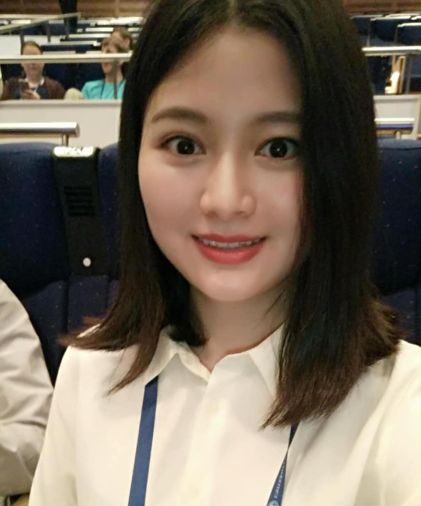

Lingling Fan (范玲玲)
I am now working as a research fellow with Prof. Liu Yang in NTU, Singapore. I received my Ph.D. degree in East China Normal University, Shanghai, China, in 2019, under the supervision of Prof. Lihua Xu (NYU Shanghai). I had been a Research Assistant in Cyber Security Lab of NTU (2017-2019).
My research interests are but not limited to Software Testing and Analysis, Android Testing, Android exception analysis, and Android vulnerability analysis.
Nanyang Technological University, Singapore
ecnujanefan@gmail.com
llfan@ntu.edu.sg
Publications
[Software Testing and Analysis]
- Lingling Fan, Ting Su, Sen Chen, Guozhu Meng, Yang Liu, Lihua Xu and Geguang Pu, "Efficiently Manifesting Asynchronous Programming Errors in Android Apps", In 33rd ACM/IEEE International Conference on Automated Software Engineering (ASE'18), Montpellier, France, 2018. (acceptance rate: 69/346 = 19.9%) [PDF]
- Lingling Fan, Ting Su, Sen Chen, Guozhu Meng, Yang Liu, Lihua Xu, Geguang Pu and Zhendong Su, "Large-Scale Analysis of Framework-Specific Exceptions in Android Apps", In Proceedings of the 40th International Conference on Software Engineering (ICSE'2018), Gothenburg, Sweden, 2018. (acceptance rate: 105/502 = 20.9%) [PDF] [BibTex] [Website] [Slides] [press]
- Sen Chen, Lingling Fan, Chunyang Chen, Ting Su, Wenhe Li, Yang Liu, Lihua Xu, "StoryDroid: Automated Generation of Storyboard for Android Apps", In Proceedings of the 41st ACM/IEEE International Conference on Software Engineering (ICSE'2019), Montréal, QC, Canada, 2019. (acceptance rate: 109/529 = 20.6%) [PDF]
- Lingling Fan, Sen Chen, Lihua Xu, Zongyuan Yang, Huibiao Zhu, Model-Based Continuous Verification, In Proceedings of the IEEE ASIA-Pacific Software Engineering Conference (APSEC'2016), Hamilton, New Zealand, 2016. (acceptance rate: 19.7%) [PDF]
- Sen Chen, Lingling Fan, Ting Su, Lei Ma, Yang Liu and Lihua Xu. "Automated Cross-Platform GUI Code Generation for Mobile Apps", In 2019 IEEE 1st International Workshop on Artificial Intelligence for Mobile (AI4Mobile), Hangzhou, China, 2019
[Security Analysis]
 Guangke Chen, Sen Chen, Lingling Fan, Xiaoning Du, Zhe Zhao, Fu Song, Yang Liu, "Who is Real Bob? Adversarial Attacks on Speaker Recognition Systems", In Proceedings of the IEEE Security and Privacy (Oakland'2021), 2021. [PDF]
Guangke Chen, Sen Chen, Lingling Fan, Xiaoning Du, Zhe Zhao, Fu Song, Yang Liu, "Who is Real Bob? Adversarial Attacks on Speaker Recognition Systems", In Proceedings of the IEEE Security and Privacy (Oakland'2021), 2021. [PDF] - Sen Chen, Lingling Fan, Guozhu Meng, Ting Su, Minhui Xue, Yinxing Xue, Yang Liu, and Lihua Xu, "An Empirical Assessment of Security Risks of Global Android Banking Apps", In Proceedings of the 42nd International Conference on Software Engineering (ICSE2020), Seoul, South Korea, 2020. (129/617 = 20.9%) [PDF]
- Sen Chen, Lingling Fan*, Chunyang Chen, Minhui Xue, Yang Liu, and Lihua Xu, "GUI-Squatting Attack: Automated Generation of Android Phishing Apps", IEEE Transaction on Dependenable and Secure Computing (TDSC), 2019. (accepted) (* Corresponding author) [PDF]
- Chongbin Tang, Sen Chen, Lingling Fan*, Lihua Xu, Yang Liu, Zhushou Tang and Liang Dou, "A Large-scale Empirical Study on Industrial Fake Apps", In Proceedings of the 41st ACM/IEEE International Conference on Software Engineering (ICSE'2019), Software-Engineering-in-Practice Track (SEIP), Montréal, QC, Canada, 2019. (acceptance rate: 30/135 = 22%) (* Corresponding author) [PDF]
- Sen Chen, Ting Su, Lingling Fan, Guozhu Meng, Minhui Xue, Yang Liu, Lihua Xu, "Are Mobile Banking Apps Secure? What Can be Improved?", In Proceedings of the 26th ACM Joint European Software Engineering Conference and Symposium on the Foundations of Software Engineering (ESEC/FSE'18), Industrial Track, Florida, United States, 2018. [PDF]
- Sen Chen, Minhui Xue, Lingling Fan, Lei Ma, Yang Liu and Lihua Xu. "How Can We Craft Large-Scale Mobile Malware? An Automated Poisoning Attack", In 2019 IEEE 1st International Workshop on Artificial Intelligence for Mobile (AI4Mobile), Hangzhou, China, 2019
- Lingling Fan, Minhui Xue, Sen Chen, Lihua Xu, Haojin Zhu, "POSTER: Accuracy vs. Time Cost: Detecting Android Malware through Pareto Ensemble Pruning", In Proceedings of the ACM Conference on Computer and Communications Security (CCS'2016), Vienna, Austria, 2016. [PDF] [Poster]
- Sen Chen, Minhui Xue, Lingling Fan, Shuang Hao, Lihua Xu, Haojin Zhu, and Bo Li, "Automated Poisoning Attacks and Defenses in Malware Detection System: An Adversarial Machine Learning Approach", In Proceedings of the Elsevier Computers & Security, 2017. [PDF]
[Data-Driven Analysis]
- Jing Kai Siow, Cuiyun Gao, Lingling Fan, Sen Chen, and Yang Liu, "CORE: Automating Review Recommendation for Code Changes", In Proceedings of the 27th IEEE International Conference on Software Analysis, Evolution and Reengineering (SANER 2020), London, Ontario, Canada, 2020. (21.1% = 44/199) [PDF]
Education
Ph.D., Computer Science and Technology, East China Normal University, 2014 - 2019
B.S., Computer Science and Technology, East China Normal University, 2010 - 2014
Award
Outstanding graduates of Shanghai, China, May 2019
ACM SIGSOFT Distinguished Paper Award, ICSE, May, 2018
Research Tool Award, NASAC, 2018
National Scholarship, The Ministry of Education, China, 2018
ACM SIGSOFT CAPS Award, ASE, ACM, 2018
Outstanding student of ECNU, China, December 2015
Outstanding graduates of Shanghai, China, June 2014
Academic Services
Proceeding chair of Internetware 2020.
Financial chair of APSEC 2020.
PC member of ICECCS 2020.
PC member of AI4Mobile 2019 (Workshop co-located with SANER 2019)
Sub-reviewer of WASA 2016